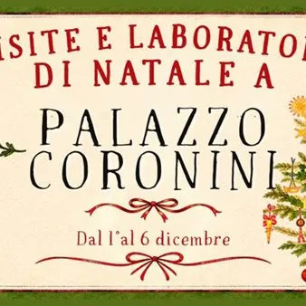

da mar 1 dic a dom 6 dic
Dicembre a Palazzo Coronini
Dicembre a Palazzo Coronini Dal 1° al 6 dicembre, visite speciali e laboratori creativi per grandi e piccoli! Per informazioni: https://www.coronini.it
 Indicazioni
Indicazioni
- Costi e prenotazioni
- Costo non indicato · Prenotazione non indicata
- Programma
- Programma da verificare. Apri la fonte ufficiale per orari e possibili aggiornamenti.
- In caso di maltempo
- Nessuna indicazione specifica pubblicata.
- Note
- Acquisito automaticamente dalla fonte.
L’EVENTO
Descrizione completa
Dal 1° al 6 dicembre, visite speciali e laboratori creativi per grandi e piccoli!
Il Natale si avvicina e Palazzo Coronini si prepara a celebrarlo con un programma di appuntamenti dedicati alla creatività, alla scoperta delle sue collezioni e alle tradizioni delle feste.
Quattro giornate di visite guidate e laboratori, pensate per adulti e bambini, durante le quali sarà possibile conoscere curiosità e storie legate al Palazzo e realizzare grandi e piccoli oggetti natalizi da portare a casa.
Tutte le attività sono a numero chiuso e la prenotazione è obbligatoria.
I posti sono limitati!
MARTEDÌ 1° DICEMBRE
STORIA DEL NATALE E IL CENTROTAVOLA PER LE FESTE
Visita speciale e laboratorio creativo per adulti
Un pomeriggio dedicato alle tradizioni natalizie e alla creatività! Si comincia con una visita a Palazzo Coronini alla scoperta delle tradizioni natalizie. A seguire, un laboratorio con l'artigiana goriziana Rebecca Tomasi , durante il quale ogni partecipante potrà realizzare un centrotavola natalizio per decorare la propria casa durante le feste.
Orari: Ore 17.00 – Visita guidata Ore 18.00 – Laboratorio creativo Costi: visita € 6,00 | laboratorio € 25,00
Attività rivolta agli adulti.
GIOVEDÌ 3 DICEMBRE
I MERLETTI NEI RITRATTI CORONINI
Un'occasione per avvicinarsi all'affascinante arte del merletto a tombolo!
La giornata inizierà con una visita dedicata ai pizzi e merletti dei ritratti delle collezioni Coronini.
A seguire, grazie alla collaborazione dell' Associazione FUSELLIAMO , i partecipanti potranno cimentarsi nella lavorazione del merletto a tombolo, sperimentando direttamente l'utilizzo dei fuselli.
Non è richiesta alcuna esperienza : il laboratorio è adatto anche a chi non ha mai utilizzato i fuselli e desidera avvicinarsi per la prima volta a questa antica tecnica artigianale.
Orari: Ore 17.00 – Visita guidata Ore 18.00 – Laboratorio Costi: visita € 6,00 | laboratorio gratuito
SABATO 5 DICEMBRE
C'ERA UNA VOLTA IL PALAZZO... DA COMPLETARE!
Visita didattica e laboratorio creativo per bambini
Chi era Willy, il piccolo conte? Com'era la sua vita a Palazzo Coronini?
Attraverso la visita didattica dedicata a Guglielmo Coronini Cronberg bambino , i piccoli partecipanti potranno scoprire la storia di alcuni oggetti curiosi.
Al termine della visita, spazio alla fantasia con un laboratorio creativo durante il quale i piccoli partecipanti potranno completare e personalizzare il loro Palazzo Coronini, utilizzando disegni e adesivi.
Orari: Ore 11.00 – Visita didattica Ore 12.00 – Laboratorio creativo Costo complessivo: € 6,00 a bambino, comprensivo di visita e laboratorio.
Età consigliata: dai 6 agli 8 anni
I bambini dovranno essere accompagnati da un adulto.
DOMENICA 6 DICEMBRE
DECORONINI. CREA LA TUA PALLINA IN STILE CORONINI
Laboratorio e visita didattica per bambini.
Un appuntamento dedicato ai più piccoli per scoprire Palazzo Coronini. I partecipanti potranno realizzare una speciale pallina di Natale ispirata a Palazzo Coronini, da appendere al proprio albero come ricordo dell'esperienza. Successivamente la pallina servirà per capire a quale oggetto di Palazzo Coronini è legata.
Orari:
- Ore 11.00 - Laboratorio creativo
- Ore 12.00 - Visita didattica
Costo complessivo: € 6,00 a bambino, comprensivo di visita e laboratorio.
Età consigliata: dagli 8 anni in su .
Modalità di partecipazione Per gli appuntamenti del 1° e 3 dicembre è possibile partecipare alla sola visita guidata, al solo laboratorio oppure a entrambe le attività.
Per gli appuntamenti del 5 e 6 dicembre, dedicati ai bambini, la visita didattica e il laboratorio costituiscono un'unica esperienza e prevedono la partecipazione a entrambe le attività. La prenotazione è obbligatoria per tutti gli appuntamenti.
I posti sia per le visite sia per i laboratori sono limitati.
Per informazioni e prenotazioni:
Email: info@coronini.it
IL PROGRAMMA
Programma e orari
Appuntamenti raccolti dalle fonti elencate. Dove manca un orario, non è ancora disponibile in questa scheda.
Programma pubblicato
- Ore 17.00 – Visita guidata
- Ore 18.00 – Laboratorio creativo
- Ore 18.00 – Laboratorio
- Ore 11.00 – Visita didattica
- Ore 12.00 – Laboratorio creativo
INFORMAZIONI UTILI
Prima di partire
- Controllare la fonte prima di partire.
ORGANIZZAZIONE